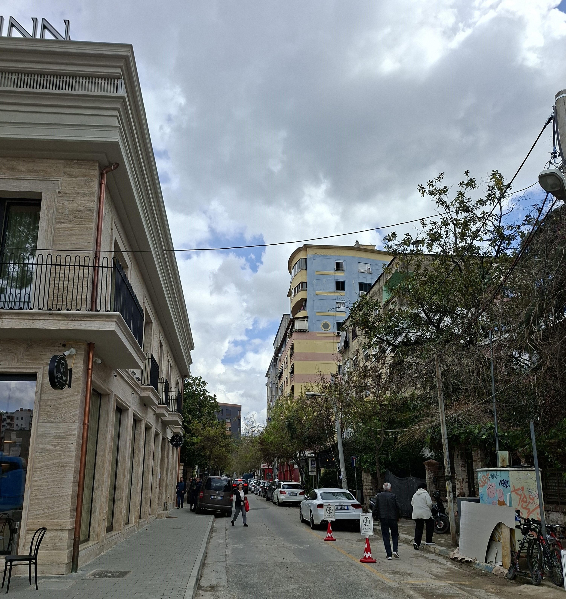
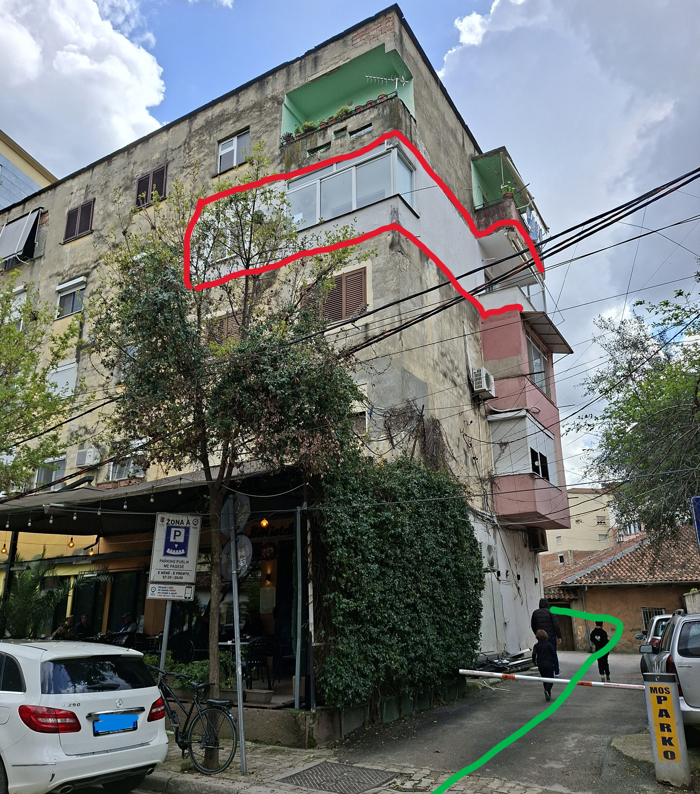
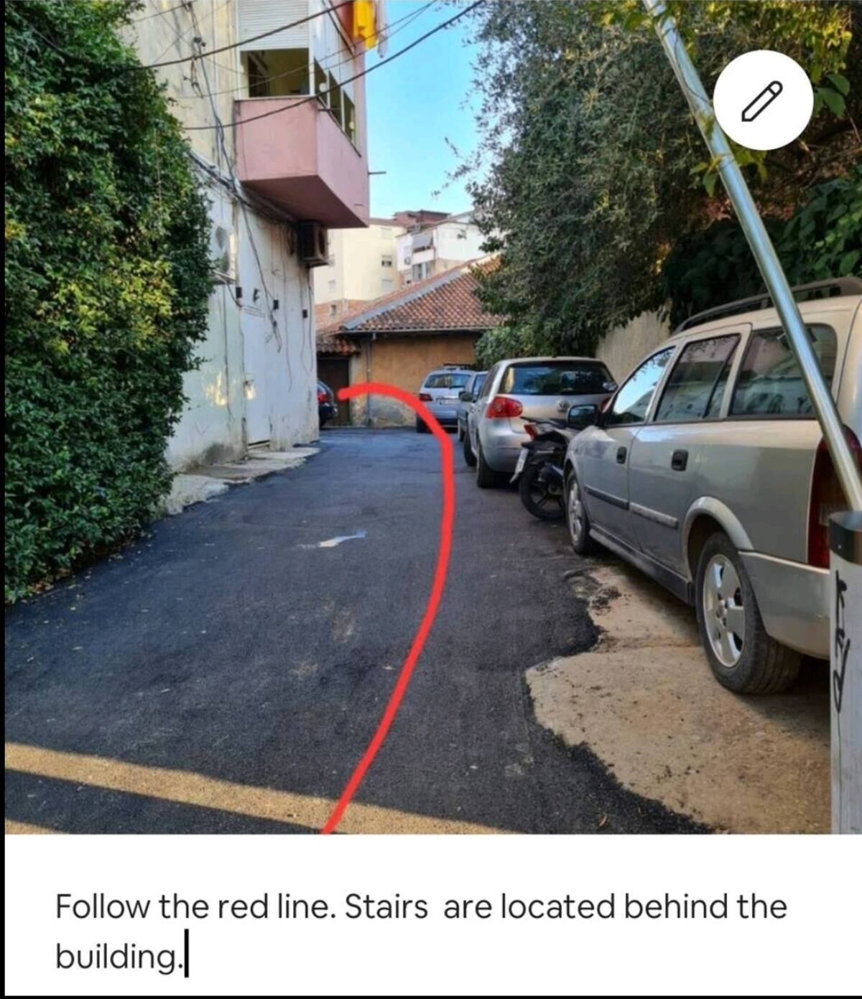
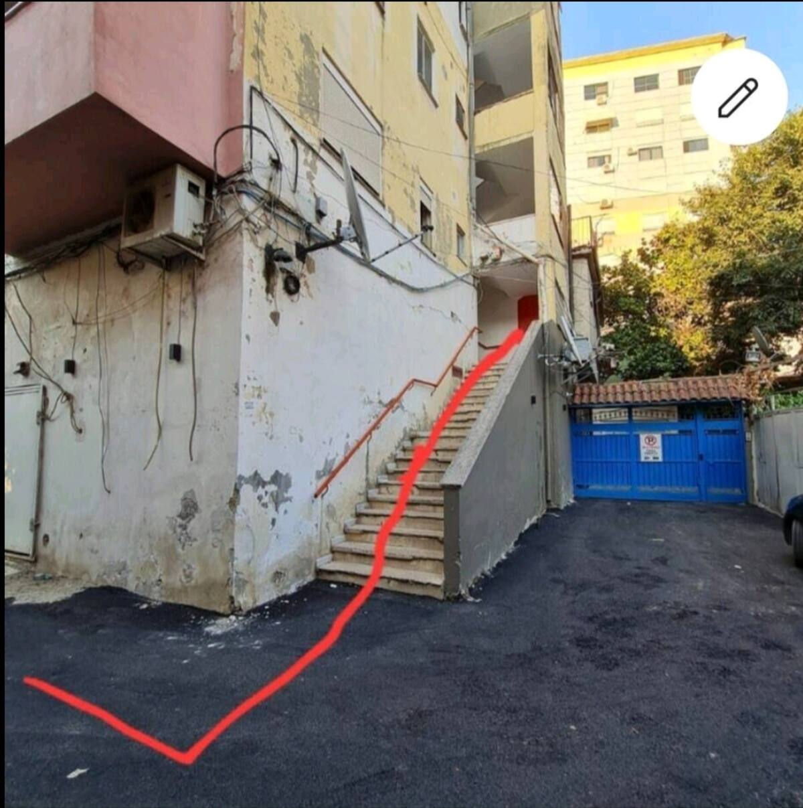
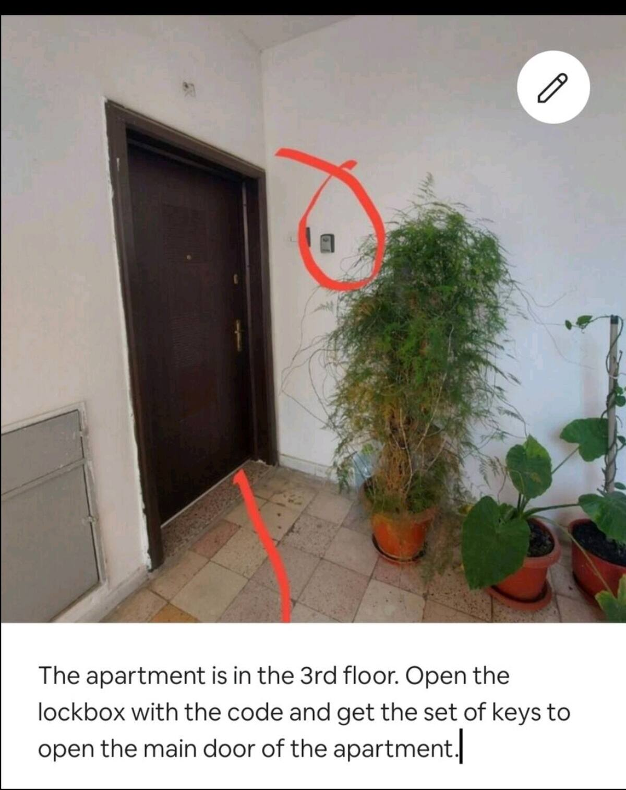

Apartamenti ynë ndodhet në zemër të qytetit, pranë Pazarit të Ri. Gjithçka që ju nevojitet — nga aeroporti deri te kthimi.
Our apartment is in the heart of the city, near the New Bazaar. Everything you need — from the airport to your return trip.
Fillo Guidën ↓Start the Guide ↓Aeroporti Ndërkombëtar i Tiranës "Nënë Tereza" (TIA) ndodhet rreth 17 km nga apartamenti ynë në Pazarin e Ri. Rruga zgjat 25-40 minuta sipas trafikut.
Tirana International Airport "Mother Teresa" (TIA) is about 17 km from our apartment near the New Bazaar. The drive takes 25-40 minutes depending on traffic.
Pas kontrollit të pasaportës, merrni bagazhin dhe dilni nga dera kryesore. Kthehuni majtas për makinat me qira, ose drejtohuni drejt daljes për taksi dhe autobus.
After passport control, collect your luggage and exit through the main door. Turn left for car rentals, or go straight for taxis and buses.
Taksitë private ndodhen përballë terminalit të mbërritjeve. Çmimi: 2,000–3,000 ALL (~€22–30). Kohëzgjatja: 35-45 min.
Private taxis are right outside arrivals. Fare: 2,000–3,000 ALL (~€22–30). Duration: 35-45 min.
Çmimet fillojnë nga €10-20/ditë. Disa kompani direkt në aeroport:
Prices start from €10-20/day. Several companies at the airport:
Niset çdo 1 orë drejt Stacionit Qendror. Çmimi: ~400 ALL (~€4).
Departs every hour to Tirana Central Station. Fare: ~400 ALL (~€4).
Organizojmë transfer privat (~€25-35). Na shkruani paraprakisht në Airbnb.
We can arrange a private transfer (~€25-35). Message us in advance on Airbnb.
Apartamenti ndodhet në Pazarin e Ri, qendër të Tiranës. Na njoftoni me mesazh kur arrini.
The apartment is in the New Bazaar, central Tirana. Message us when you arrive.
Check-in: Nga ora 15:00 e tutje
Check-out: Deri në orën 11:00
Për orar fleksibël, na kontaktoni sa më parë!
Check-in: From 3:00 PM onwards
Check-out: By 11:00 AM
For flexible timing, contact us as early as possible!
Rrjeti dhe fjalëkalimi janë në kartonin pranë televizorit.
Network name and password are on the card next to the TV.
Ka telekomandë. Fikeni kur dilni nga apartamenti.
Has a remote control. Please turn it off when you leave.
Spar ndodhet vetëm 30m larg — hapur çdo ditë 07:00–22:00.
Spar is just 30m away — open daily 07:00–22:00.
Ndiqni këto hapa vizualë për të arritur nga rruga deri te dera e apartamentit.
Follow these visual steps to get from the street to the apartment door.
📍 Hap vendndodhjen në Google Maps →📍 Open location on Google Maps →
Apartamenti ndodhet pranë Pazarit të Ri, te Bar "Te Biblioteka". Ne hyrje te rruges Tefta Tashko-Koco.
The apartment is near the New Bazaar, at Bar "Te Biblioteka". At the entrance of Tefta Tashko-Koço Street.

Taksia do t'ju lërë këtu. Kati përdhe ka Bibliotekën Publike "Moikom Zeqo" dhe bar "Te Biblioteka". Rrethi i kuq tregon apartamentin nga jashtë. Shkoni prapa barit "Te Biblioteka", ngjituni shkallëve.
The taxi should leave you here. Ground floor has City Public Library "Moikom Zeqo" and coffee bar "Te Biblioteka". The red circle shows the apartment from outside. Go behind bar "Te Biblioteka" and up the stairs.

Ndiqni vijën e kuqe. Shkallët ndodhen prapa ndërtesës.
Follow the red line. The stairs are located behind the building.

Ndiqni vijën e kuqe lart shkallëve drejt hyrjes së ndërtesës.
Follow the red line up the stairs to the building entrance.

Apartamenti ndodhet në katin e 3-të. Hapni lockbox-in me kodin (do t'ju dërgohet para mbërritjes) dhe merrni çelësat për të hapur derën kryesore.
The apartment is on the 3rd floor. Open the lockbox with the code (sent before arrival) and get the keys to open the main door.
Për një qëndrim të këndshëm dhe pa probleme, ju lutemi lexoni dhe respektoni rregullat e mëposhtme:
For a pleasant and trouble-free stay, please read and respect the following rules:
Duhet të jeni mbi 18 vjeç për të bërë rezervim. Mysafiri konfirmon që është mbi 18 vjeç.
You must be 18 years or older to book. Guest confirms they are over 18.
Ndalohet rreptësisht pirja e duhanit brenda. Nëse konstatohet erë ose shenjë duhani pas check-out, aplikohet tarifë pastrimi prej $1,000/ditë.
Strictly no smoking indoors. If any sign or smell of smoke is found after check-out, a $1,000/day Smoke Damage Cleaning Fee applies.
Nuk lejohen kafshë pa miratim paraprak me shkrim nga hosti. Pa miratim: tarifë $300 dhe largim i menjëhershëm pa rimbursim.
No pets without prior written approval from host. Unapproved pets: $300 fee and immediate eviction without refund.
Nuk lejohen festa, evente, ose tubime. Nuk lejohen mysafirë të paregjistruar.
No parties, events, or gatherings allowed. No unregistered guests permitted.
Ju lutemi mos hani dhe mos pini në dhoma gjumi. Vetëm në kuzhinë dhe dhomën e ndenjës.
Please don't eat or drink in the bedrooms. Kitchen and living room only.
Fikni kondicionerin kur dilni nga apartamenti.
Please turn off the AC when you go out.
Kujdesuni për çelësat. Humbja e tyre ka tarifë zëvendësimi.
Take extra care of your keys. Lost keys incur a replacement fee.
Kujdesuni për mobiljet. Duhet të paguani për çdo dëmtim.
Take care of the furniture. You must pay for any damages.
Lani enët (hiqni papastërtitë para se t'i vendosni në lavaenë). Mos vendosni enë të palara në dollap.
Do your dishes (remove dirt before placing in the dishwasher). Do not put unwashed dishes in the cupboard.
Mos përdorni peshqirët për të pastruar këpucët ose pantofla.
Please do not use towels to clean shoes or slippers.
Nëse përdorni tharësen, zbrazni enën e ujit pas çdo përdorimi dhe pastroni filtrat brenda derës.
If you use the dryer, please empty the water container after each use and clean the filters inside the door.
Nxirrni plehrat para se të largoheni.
Please take the trash out before you leave.
Mos hidhni letra në tualet.
Do not throw papers in the toilet.
Ndalohen substancat e paligjshme brenda pronës.
No illegal substances allowed on the premises.
Vendet më të mira rreth Pazarit të Ri.
The best places around the New Bazaar area.
Kafe e shkëlqyer dhe ëmbëlsira. Brenda Pazarit të Ri.
Excellent coffee and desserts. Inside the New Bazaar.
Pazari i Ri, Tiranë
Mëngjes i mrekullueshëm. Burgera, sallata, brunch amerikan.
Great breakfast spot. Burgers, salads, American brunch.
Rr. Hoxha Tahsim 1
Kuzhinë tradicionale me qasje bashkëkohore. Menuja e degustimit është e jashtëzakonshme.
Traditional cuisine with a modern twist. The tasting menu is extraordinary.
Shëtitorja Lasgush Poradeci
Set menu me shumë pjata. Provoni verën e shtëpisë. Brenda Kalasë.
Set menu with many dishes. Try the homemade wine. Inside Tirana Castle.
Kalaja e Tiranës
I dashur nga vendësit dhe turistët. Provoni djathin e pjekur.
Loved by locals and tourists alike. Try the baked cheese.
Rruga Papa Gjon Pali II
Pica, pasta, gamë e gjerë pjatash. Pranë fontanës në Parkun Rinia.
Pizza, pasta, wide variety. Beautiful setting by the fountain in Rinia Park.
Parku Rinia
Kuzhinë tradicionale, pica, pasta. Shumë e frekuentuar në Bllok.
Traditional cuisine, pizza, pasta. Very popular in Blloku area.
Rruga Ismail Qemali (Blloku)
Shija e fshatit. Dekor rustik, pjata shtëpie, staf mikpritës.
Taste of the village. Rustic decor, homestyle dishes, welcoming staff.
Rruga e Dibrës 61
Rooftop me fruta deti. Pamje panoramike e Tiranës.
Rooftop seafood. Panoramic views of Tirana and surrounding mountains.
Rruga 4 Dëshmorët
Teleferiku më i gjatë në Ballkan. Panoramë, minigolf, restorant, park aventurash.
Balkans' longest cable car. Panoramic views, mini-golf, restaurant, adventure park.
Muze brenda bunkeri gjigand komunist. Përvojë unike.
Museum inside a massive Cold War bunker. Unique experience.
Restorante, kafene, dyqane artizanale brenda mureve osmane.
Restaurants, cafés, artisan shops within Ottoman walls.
Luanë, tigra, arinj. Hyrja: 300 ALL. Mbyllur të hënave.
Lions, tigers, bears. Entry: 300 ALL. Closed Mondays.
Sit arkeologjik romak me mozaikë. Vizitë e shkurtër.
Roman archaeological site with mosaics. Short but interesting.
Kala bizantine, shek. VI. Restorant në majë. ~30 min me makinë.
6th century Byzantine castle. Restaurant at the top. ~30 min drive.
Qytet UNESCO. ~2 orë nga Tirana.
UNESCO city with magnificent castle. ~2 hours from Tirana.
Kala ilire mbi liqenin e Shkodrës. ~2 orë nga Tirana.
Ancient Illyrian castle overlooking Lake Shkodra. ~2 hours.
Tregu vetëm 50m larg. Fruta, perime, erëza, suveniret — atmosferë e gjallë.
Market just 50m away. Fruits, veggies, spices, souvenirs — vibrant atmosphere.
Rruga Shenasi Dishnica
Supermarket 30m larg. Produkte të freskëta. 07:00–22:00.
Supermarket 30m away. Fresh produce. 07:00–22:00.
Rruga Tefta Tashko-Koço
Fortesë me kafene, restorante, dyqane. Pranë Toptani.
Fortress with cafés, restaurants, shops. Near Toptani Center.
Kokteje të shkëlqyera, muzikë latino. ~20 min në këmbë.
Excellent cocktails, Latin music. ~20 min walk.
Rruga Ibrahim Rugova
Dekor unik, atmosferë e mrekullueshme natën.
Unique decor, wonderful evening atmosphere.
Rruga Mustafa Matohiti
Perfekt për pasdite me miq. Pije kreative, finger food.
Perfect for afternoon with friends. Creative drinks, finger food.
Rruga Mustafa Matohiti 18
Atmosferë autentike, muzikë live të mërkurave. Mojitos & darts.
Authentic atmosphere, live music Wednesdays. Mojitos & darts.
Rruga Pjetër Bogdani (Blloku)
Guidën e plotë me harta interaktive direkt në Airbnb.
Full guide with interactive maps on Airbnb.
Hap Guidën →Open Guide →Rruga nga qendra drejt aeroportit: 25-40 minuta.
Drive from center to airport: 25-40 minutes.
Minimum 2 orë para fluturimit ndërkombëtar - Evrope, 3 orë për USA/Kanada(pjesa tjeter e botes).
At least 2 hours before international flights - Europe, 3 hours USA/Canada (rest of the world).
TIA ka një terminal. Siguria zgjat 10-20 min.
TIA has one terminal. Security takes 10-20 min.